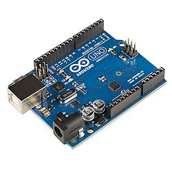
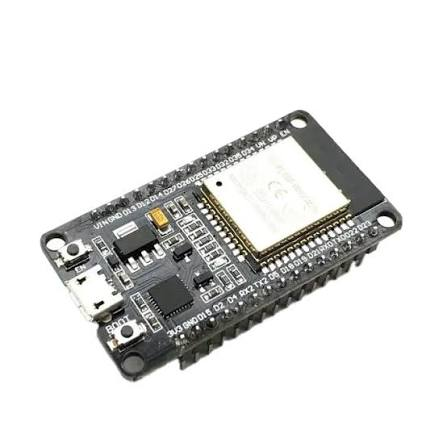
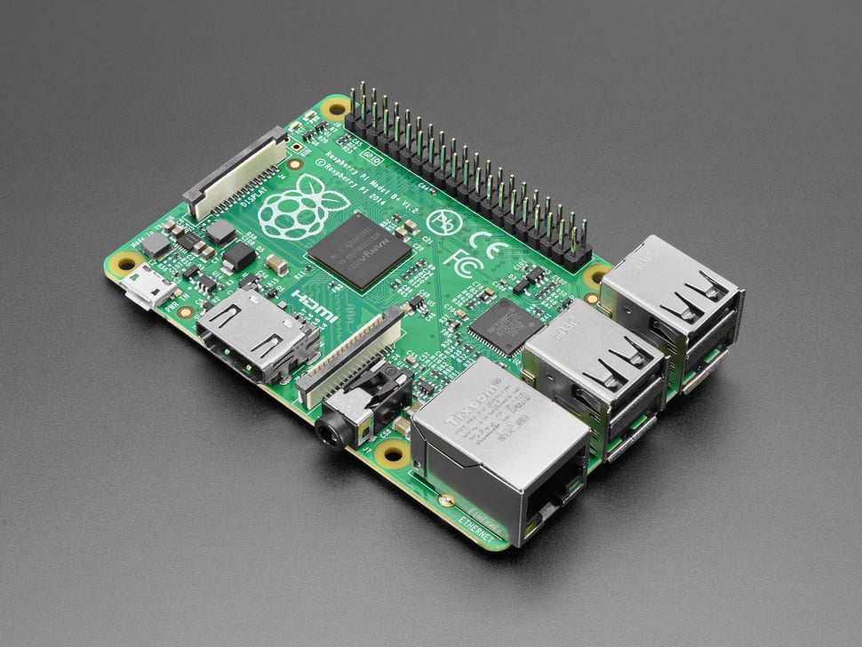

Hardware y Tecnologías de Desarrollo
El desarrollo en IoT se sustenta en una amplia gama de plataformas de hardware adaptadas a diferentes escalas de proyectos:
- Microcontroladores de Bajo Costo (para nodos sensores):
- ESP32 / ESP8266: Placas muy populares que integran conectividad Wi-Fi y Bluetooth de fábrica, ideales para proyectos conectados de bajo costo.
- Arduino (Uno, Nano, Mega): Plataformas de código abierto excelentes para el aprendizaje inicial de lectura analógica/digital y control básico de pines (GPIO).
- Computadoras de Placa Reducida (SBC):
- Raspberry Pi: Funcionan como miniordenadores capaces de correr sistemas operativos basados en Linux. Se utilizan en proyectos IoT avanzados que requieren procesamiento local (Edge Computing), bases de datos locales o servidores web integrados.



Lenguajes de Programación y Protocolos de Comunicación
Lenguajes Principales:
- C y C++: Son los lenguajes estándar de la industria para microcontroladores (como Arduino y ESP32). Ofrecen un control absoluto sobre los recursos de hardware y una velocidad de ejecución sumamente eficiente.
- Python: Muy utilizado en pasarelas y placas como Raspberry Pi gracias a su sintaxis intuitiva, facilidad de integración y librerías avanzadas para análisis de datos e inteligencia artificial.
- JavaScript (Node.js): Empleado frecuentemente en el desarrollo de servidores web de tiempo real y paneles de control basados en WebSockets.
Protocolos de Comunicación Clave:
- Ciberseguridad:Al haber millones de dispositivos interconectados, la superficie de ataque aumenta considerablemente, haciendo vital la encriptación de datos y la gestión segura de credenciales.
- Interoperabilidad: La enorme variedad de fabricantes y estándares dificulta a veces que dispositivos de diferentes marcas se comuniquen entre sí de forma fluida.